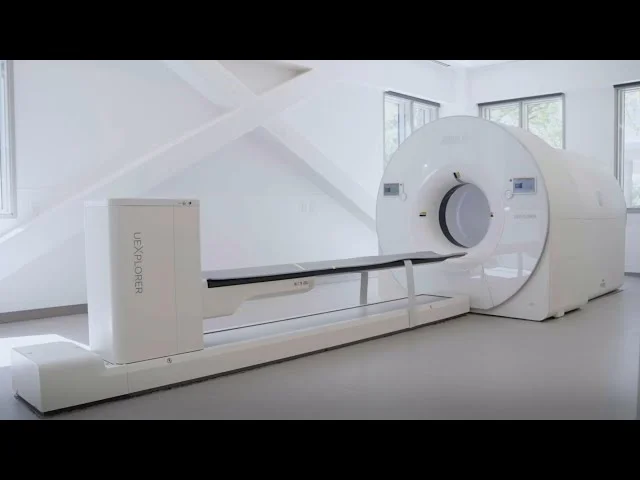
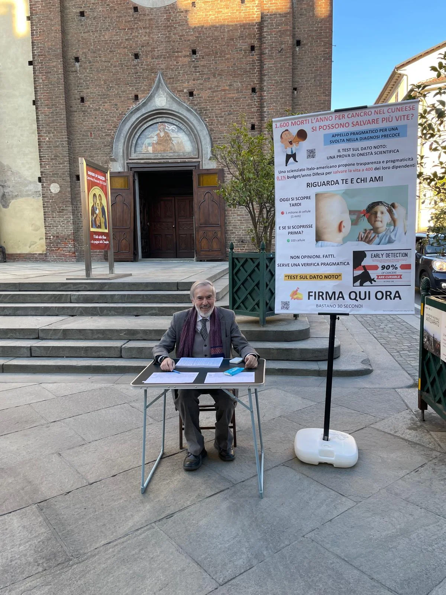
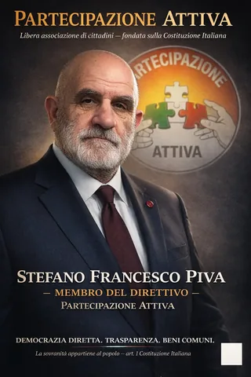
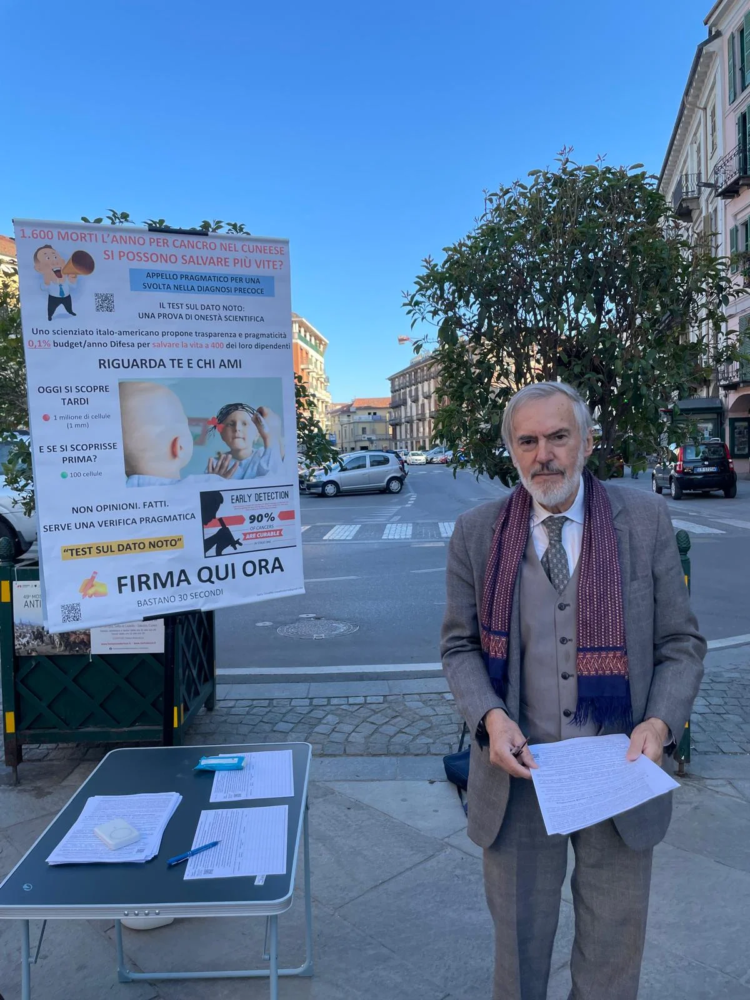

Due componenti del direttivo di Partecipazione Attiva, Paolo Neri e Stefano Francesco Piva, si esprimono con una voce comune sul progetto 3D-CBS dello scienziato italo-americano Dario Crosetto: una tecnologia innovativa per la diagnosi precoce del cancro che, secondo entrambi, merita una valutazione scientifica formale e finanziamenti pubblici trasparenti.


Perché vale la pena dare una possibilità alla “Super PET” di Dario Crosetto
Partecipazione Attiva ritiene che ogni tentativo, nel campo della ricerca, tendente a salvare vite umane sia da sostenere, tanto più quando frutto di uno studio per la diagnosi precoce del cancro, che in quanto “precoce” di per sé sarebbe vincente sulla malattia, come nel caso della Super-PET di Dario Crosetto.
Da una parte, c’è la nuova tecnologia di Crosetto che potrebbe migliorare la diagnosi precoce dei tumori, dall’altra, c’è il fatto che questa tecnologia non ha ancora tutte le prove scientifiche definitive. Ma per ottenere quelle prove servono finanziamenti, strutture, studi clinici. E senza finanziamenti, quelle prove non potranno mai arrivare. È un circolo chiuso: senza prove non si finanzia, senza finanziamenti non si ottengono prove. Nel frattempo, ogni giorno, ci sono persone che ricevono diagnosi troppo tardi.
Allora la vera domanda non è: “È già tutto dimostrato?” La vera domanda è: possiamo permetterci di non verificare fino in fondo qualcosa che potrebbe salvare vite umane? Certo, esiste un rischio. Non tutte le innovazioni funzionano. Ma il costo di una sperimentazione, alto o basso che sia, è comunque limitato. Il costo del “non provarci”, invece, potrebbe essere enorme.
Per questo, sostenere da parte delle Istituzioni preposte un finanziamento controllato e trasparente non è un atto di fede, ma una scelta morale e di responsabilità. Perché quando c’è anche solo un dubbio che qualcosa possa salvare vite, quel dubbio non deve fermarci. Deve semplicemente spingerci ad agire, per verificare.
È un paradosso: niente prove → niente fondi → niente prove.
Nel frattempo, le diagnosi tardive continuano.
Non si tratta di credere. Si tratta di verificare.
Anche una sola possibilità in più di salvare una vita merita attenzione. Partecipazione Attiva non ha dubbi: bisogna finanziare per dare risposte certe.


Perché vale la pena dare una possibilità al progetto 3D-CBS di Dario Crosetto
Partecipazione Attiva ritiene che ogni tentativo nel campo della ricerca tendente a salvare vite umane meriti attenzione. Tanto più quando riguarda la diagnosi precoce del cancro: identificare un tumore prima che si manifesti clinicamente è, di per sé, un fattore decisivo per la sopravvivenza — ed è esattamente l’obiettivo dichiarato del progetto 3D-CBS di Dario Crosetto.
Da una parte c’è una tecnologia che potrebbe migliorare radicalmente la diagnosi precoce dei tumori. Dall’altra, ci sono prove scientifiche ancora incomplete. Ma per ottenere quelle prove servono finanziamenti, strutture, studi clinici. E senza finanziamenti, quelle prove non arriveranno mai.
È un circolo chiuso:
senza prove non si finanzia → senza finanziamenti non si ottengono prove.
Nel frattempo, ogni giorno, ci sono persone che ricevono una diagnosi troppo tardi.
Il progetto 3D-CBS non parte da concetti arbitrari: si inserisce in un quadro di fisica nucleare applicata alla medicina, con ipotesi che attendono verifica clinica. Quella verifica non è ancora avvenuta. Ed è esattamente ciò che chiediamo.
Per questo Partecipazione Attiva chiede alle istituzioni competenti — AGENAS, Ministero della Salute, Commissioni parlamentari — di attivare una valutazione formale, pubblica e motivata del progetto 3D-CBS.
Non chiediamo di credere. Chiediamo che qualcuno verifichi — e che lo dica a voce alta.

Il calendario degli eventi di Dario Crosetto — maggio/giugno 2026
📅 15–17 maggio 2026 — Valencia, Spagna
Workshop MEDAMI — Nuclear Medicine in Low and Medium Income Countries
Presentazione il 16 maggio ore 18:20
📅 3 giugno 2026, ore 18:00 — Cuneo, Italia
Incontro e dibattito pubblico sulle invenzioni 3D-Flow e 3D-CBS
Salone d’Onore del Comune di Cuneo, Via Roma 28 — Ingresso libero
📅 18 giugno 2026 — Roma, Italia
XX Conferenza dei Ricercatori Italiani nel Mondo
Presidenza del Consiglio dei Ministri, Sala Polifunzionale